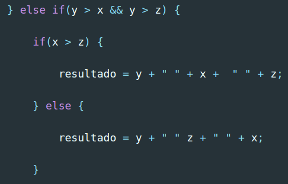
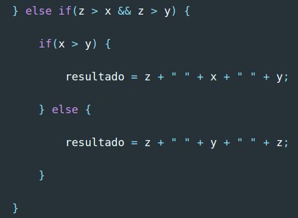

Resolução e análise à ficha de trabalho nº 2
Documento pdf associado: Ficha de trabalho nº 2
A segunda ficha de trabalho que foi realizada em aula teve como objetivo primordial introduzir tanto a mim como aos meus colegas a linguagem de programação JavaScript. Conhecendo, antes de frequentar esta cadeira, apenas alguns pontos da sintaxe da mesma e nada sabendo, à partida, acerca da sua interação com o DOM (Document Object Model) e o HTML, foi com grande gosto que tive a oportunidade de proceder à resolução dos exercícios/algoritmos presentes nesta ficha de trabalho.
Destaques a salientar:
- Na resolução da ficha, foi patente que poderiam ser utilizados os vários métodos disponíveis pelos objetos de cada tipo (tal como ".length", ".split(''), entre outros"), o que visava facilitar a busca da solução relativa aos problemas apresentados;
- Há que salientar ainda que o procedimento introdutório à linguagem teve como princípio a escrita de código JavaScript na sua versão Vanilla, isto é, na sua face mais pura, sem auxílio externo. Só mais tarde nos foi apresentada a extensão/biblioteca mais popular da linguagem, jQuery, sendo seguida uma cronologia de ensino lógica;
- De resto, tal como nesta e nas seguintes fichas de trabalho, utilizei o git para criar branches à medida que resolvia cada uma das alíneas, acabando no fim por fazer merge de todas a branches no "ramo principal", o master.
Exercício 1: Escreva um programa em JavaScript que:
- a. Compare dois números e que apresente o maior:
- Ex: 123, 321
- Resultado: 321
Resolução:
Utilizando as estruturas de controlo e os comparadores da linguagem JavaScript, procedi à resolução do exercício 1 da seguinte forma:

- Passando a explicar a resolução: Foram criadas duas variáveis (do tipo number) com recurso à palavra reservada "let", uma que continha o número 123 e outra o número 321;
- Em seguida, foram comparadas as duas variáveis e presumido que se a variável "a" fosse maior que a "b", seria essa a imprimida para o ecrã, caso contrário ("else"), seria a "b" a maior;
- Verificou-se, finalmente, a partir da consola do browser, que a variável que possuía o número mais alto tratava-se da "b".
- b. Compare três números e apresente-os por ordem descrescente:
- Ex: 20, -5, 15
- Resultado: 20, 15, -5
Resolução:
Sabendo de antemão que o segundo exercício era mais exigente que o primeiro no que às estruturas de controlo diz respeito, procedi à seguinte resolução, a qual divido por partes na respetiva explicação:

- São criadas quatro variáveis: as três primeiras continham 3 números que não se encontravam ordenados, a última variável iria conter o resultado final;
- Numa primeira fase e, tal como no restante algoritmo, são utilizadas duas estruturas de controlo "if" que irão definir a posição de cada uma das variáveis no final do mesmo. Estas fazem-no colocando como hipótese a posição de cada uma das variáveis, o que torna o processo algo demoroso, mas muito bom para aprender estes princípios básicos da programação;
 
- Utilizando a palavra "else if" são colocadas as outras hipóteses de resolução do algoritmo e, finalmente, o resultado é imprimido para a consola.
- c. Usando estruturas de controlo (if... else...) apresente o maior de cinco números:
- Ex: -7, -4, -6, 0, 13
- Resultado: 0
Resolução:
Tendo em conta que o objetivo do exercício tratava-se de utilizar novamente estruturas de controlo para comparar cinco números diferentes e apresentar o maior deles, procedi à resolução da seguinte forma:

- Criando variáveis com cada um dos números apresentados, cada um deles foi comparado com todos os outros utilizando o comparador denominado de "maior", de modo a obter no final e, como resultado, qual dos números seria o maior da lista. Concluíndo-se obviamente, que seguindo os algarismos dados pelo exemplo, esse número seria o 0.
- d. Apresente se determinado valor é par ou ímpar de 0 a 15:
Resolução:
Utilizando a lógica e o raciocínio facilmente foi deduzido que este exercício pedia algo algo diferenciado dos anteriores, pois os números que este pretendia que fossem comparados não estavam explícitos pelo exercício, apesar de ser possível saber quais eram de forma subentendida.
- Estes seriam os números de 0 a 15 e portanto seria necessário utilizar um tema novo nesta ficha de trabalho, o conceito de looping. Após cada interação do loop, seria imprimido para a consola se esse número seria par ou ímpar;
- Para proceder a esta "escolha" seria também utilizado um "novo" operador, o módulo (%), que iria ser usado para comparar um número presente no intervalo obtido com o algarismo de modo, obtendo o resto da divisão (que obviamente, caso seja 0, o número tratar-se-á de um número par).
- Procedendo à criação de uma variável que iria conter o resultado final, a resolução do exercício continuou utilizado o loop que falei anteriormente, neste caso um ciclo "for", que iria produzir todos os números entre 0 e 15, com estes dois incluídos;
- De seguida, para cada número obtido iria calcular-se o resto da sua divisão por 2 e, caso esta fosse 0, a instrução que imprimiria para a consola que i (número iterado) era par seria executada. Caso contrário, a segunda instrução "console.log" mostraria no ecrã que o algarismo referido seria ímpar.
- e. Dado o array de strings ["ab", "a", "abcd", "abc"] indique:
- i. Qual a string maior.
- ii. Qual a string maior e menor.
Resolução (i):
Sendo introduzido nesta questão o conceito de "array", já discutido em aula, foi necessário utilizar tanto um iterador de arrays como os já utilizados operadores de comparação e ainda a propriedade ".length", de modo a proceder à resolução do exercício. Processo do qual falarei em seguida após a apresentação da solução.
- Divindindo a solução por etapas, há que analisar em primeiro lugar a criação de duas variáveis utilizando a keyword let. Sendo estas um array com as strings apresentadas na questão dentro do mesmo e a outra denominando-se de "maior" e sendo apenas declarada, sem atribuição de valores;
- Em seguinda procedeu-se à utilização do raciocínio lógico "prévio" e assumiu-se à partida que a maior string do array estaria localizada na primeiro posição do mesmo;
- Tendo por base o último ponto referido, à variável "maior" foi atribuído o valor que estava presente no índex "0";
- No seguimento do exercício, e passando a fase do raciocínio lógico "prévio" (como já referi anteriormente), foi utilizado um interador de arrays (for... of...), de modo a obter cada um dos valores presente no array e utilizá-lo na comparação seguinte;
- Sendo indicado cada valor pelo nome "value", estava presente na estrutura de controlo seguinte que caso a length, isto é, o comprimento desse elemento fosse maior que o comprimento da string definida como maior no início do algoritmo, esse seria o elemento com maior comprimento do array e a solução desejada;
- Caso o que foi indicado no ponto anterior não sucedesse, estaria salvaguardado que o maior elemento do array seria o que estivesse no índex "0" (indício de que o array apenas possuía um único elemento). Isto nota-se no bloco de código que seria executado no "else" da estrutura de controlo;
- Finalmente, seria imprimida para o ecrã a maior string presente no array.
Resolução (ii):
A segunda parte da alínea e) aumentava teoricamente o grau de dificuldade, mas veio-se a comprovar que esta ideia não correspondia de todo à realidade pois, sendo pedidas a maior e a menor string, apenas foi necessário mudar a lógica de resolução, utilizando os princípios aplicadas no exercício imeadiamente anterior.
- Novamente, tal como no exercício da alínea i), foi definido uma variável que iria conter o array presente na questão. Sendo que as diferenças entre os dois algoritmos começaram a notar-se logo de seguida, com a definição das variáveis "maior" (desta vez com um valor atribuído) e também a variável "menor" (também com um valor atribuído);
- Ambas as variáveis "maior" e "menor" teriam como valor atribuído inicialmente a string que estivesse presente no índex "0" do array;
- Foi novamente utilizado o iterador de arrays(for... of...) e dentro deste foram utilizadas duas estruturas de controlo que iriam definir qual o maior e qual o menor elemento presente no array definido;
- A primeira estrutura de controlo era exatamente igual à utilizada no exercício anterior e indicava que, se o valor do "value" (definido no iterador) fosse maior que o elemento indicado como tal no início do algoritmo, esse seria o valor maior do array;
- A segunda estrutura de controlo era exatamente o contrário da primeira e previa que caso o valor presente na variável "value" fosse menor que o elemento definido como tal, seria esse o menor elemento do array;
- Finalmente, seriam imprimidas para o ecrã ambas as variáveis, utilizando para tal a função "console.log".
- f. Apresente uma string invertida.
Resolução (primeira forma):
Esta alínea deu tanto a mim como aos meus colegas o objetivo de inverter uma string e em seguida apresentar a mesma. Tal como, de resto, é bem patente. Houve, de resto, três formas de resolução do exercício, sendo esta a primeira de todas.
- Acima encontra-se a primeira forma de resolução do exercício, onde pode-se notar a declaração inicial de uma string, denominada de "abcdefg";
- Em seguida foi declarado um array, que iria conter cada caractere presente na string, utilizando para isso o método ".split(' ')", que permitiu tal separação, sendo de salientar o facto do argumento do método ser um espaço, indicando a forma como a string viria a ser quebrada;
- Foi também declarada uma varíavel denominada de resultada e atribuída à mesma uma string vazia;
- Foi, por fim, utilizado um ciclo "for", que definindo o seu iterador como o comprimento do array declarado anteriormente e, enquanto este iterador fosse maior que 0, iria ser diminuído após cada iteração (i--);
- Dentro do ciclo "for", foi atribuído à variável resultado cada valor presente no array, sobre o qual estaria a ser procedida a iteração;
- Por fim, recorrendo ao método "console.log", é possível mostrar a variável resultado (string invertida) para o ecrã.
Resolução (segunda forma):
- Fazendo uso de três métodos diferentes acessíveis à linguagem JavaScript, este método tratava-se de uma forma de resolver o exercício muito mais prático mas que requeria menos raciocínio e, portanto, menos benéfica na sua globalidade;
- Tal como na primeira forma de resolução, foi declarada a mesma variável que continha a mesma string, e novamente a variável "resultado", estando esta não-vazia desta vez;
- Como referido anteriormente, a variável resultado foi utilizada de três formas distintas (utilizando para tal os três métodos já referidos anteriormente), sendo estes o ".split()", o ".reverse()" e o ".join()", dos quais falarei em detalhe seguidamente;
- Primeiramente, o split(' '), tal como já havia sido utilizado na primeira forma de resolução, tinha como objetivo separar os caracteres da string definida anteriormente, sendo que, este tratasse de um método intuitivo, tal como os dois utilizados no seguimento;
- Com a expressão intuitivo, refiro-me que os métodos fazem exatamente o que o seu o nome indica: o "reverse()" coloca a string de forma invertida (mas não junta os caracteres), ficando essa tarefa ao "cargo" do método "join(' ')", que juntaria de novo os caracteres, devolvendo a string invertida e pude fazê-lo pois, trata-se do exato oposto do método "split(' ')", utilizando, tal como este, um espaço como argumento;
- No final a variável "resultado" é imprimida para o ecrã.
Resolução (terceira forma):
- Descrevendo de forma simples a terceira forma de resolução do exercício, é de destacar apenas a junção de três linhas de código distintas numa só, executando cada método necessário, "split(' ')", "reverse()" e "join(' ')" um após o outro.
g. Escreva o seguinte padrão:
De modo a concretizar o que era pedido na alínea seria necessário, novamente, pensar da forma mais lógica possível e descobrir como seria imprimidos para o ecrã os asteriscos (*) na ordem pedida.
Resolução:
- Analisando o problema e a respetiva resolução por fases, primeiro é preciso notar que é criada uma variável denominada de "resultado", que recebe uma string vazia;
- Em seguida, existirão dois ciclos "for": o primeiro irá "correr" enquanto a variável iteradora (i, inicializada a zero), for menor ou igual a 5, sendo esta aumentada após cada iteração. O segundo ciclo "for" tem como variável iteradora "j" (também inicializada a 1), sendo que esta irá percorrer o ciclo enquanto for menor ou igual à variável "i", declarada anteriormente, sendo que o iterador "j" será aumentado após cada ciclo também;
- Durante a execução dos dois ciclos "for", é acrescentada à variável resultado o símbolo "*";
- Por fim, e fora da área de ação dos dois ciclos, é acrescentada uma quebra de linha à variável "resultado";
- Sendo entretanto imprimida para o ecrã a variável é resultado, é declarada uma nova, denominada de "char", sendo também inicializada com a atribuição de "vazio".
- O último ciclo do algoritmo "correrá" então, sendo que novamente um iterador será inicializado a 0 e irá ser executado enquanto for menor que 5, aumentando;
- Durante a execução desde último ciclo, será acrescentada à variável "char" o símbolo "*", sendo posteriormente imprimida para o ecrã a variável mencionada;
- É, finalmente, originada a "meia pirâmide" pedida pelo exercício, como se poderá notar abaixo:
Considerações finais: Após a resolução desta ficha de trabalho senti que agora tinha tanto adquirido como apreendido conhecimentos fundamentais no que toca aos building blocks da linguagem JavaScript e à seu respetivo core. Com os conhecimentos básicos da linguagem "treinados" através desta ficha de trabalho, foi possível "enfrentar" da melhor forma os vários desafios que tanto a versão Vanilla da linguagem como a versão simplificada da biblioteca jQuery colocaram no meu caminho posterior.